048 — Proyecto: aplicación de tres capas en Azure
Parte: 03 — Azure: plataforma esencial
Nivel: intermedio · Horas estimadas: 8
Laboratorio: capstone · Estado: EXECUTABLE_CORE
🎯 Propósito
Integrar las once clases anteriores en una plataforma Azure que funcione, se observe, falle de forma controlada y cueste algo explicable — y responder con evidencia la pregunta que abrió la parte: de todo lo aprendido en AWS, qué era arquitectura y ha reaparecido, y qué era mecanismo del proveedor. La respuesta a esa pregunta, escrita y con las excepciones señaladas, es lo que se lleva a la parte 04 y lo que hace que la tercera plataforma cueste una fracción de esfuerzo que la segunda.
📚 Resultados de aprendizaje
Al finalizar podrás:
- Trazar cada componente de la arquitectura hasta la clase que lo decidió y la alternativa descartada.
- Separar el contrato portable del mecanismo específico del proveedor, señalando dónde no hubo equivalencia.
- Declarar la línea base en dos capas: lo que la plantilla garantiza y lo que la directiva vigila.
- Provocar tres fallos y medir detección, impacto y recuperación en cada uno.
- Comparar dos plataformas con una unidad común, sabiendo por qué comparar facturas no sirve.
🧩 Conceptos centrales
| Concepto | Comprensión verificable |
|---|---|
trazabilidad de decisión |
Cada componente debe poder responder tres preguntas: qué requisito lo exige, qué alternativa se descartó y qué evidencia demuestra que cumple. Un componente sin las tres es una elección, no una decisión. |
contrato portable |
Lo que sobrevive al cambio de proveedor: el requisito, el patrón y la propiedad exigida al manejador. Cambia el nombre del servicio, no la obligación. |
línea base en dos capas |
La plantilla garantiza el estado al crear; la directiva vigila que siga así. Ninguna de las dos basta sola: la primera no impide un cambio posterior y la segunda no crea nada. |
hallazgo de prueba de fallo |
Lo que aparece al romper algo y no aparecía en ninguna configuración ni en ningún panel. Es el entregable real de un simulacro; que «todo aguantó» significa que el simulacro fue demasiado suave. |
riesgo residual declarado |
Lo que se decide no cubrir, con su motivo, su responsable y la condición que obligaría a revisarlo. Un riesgo no escrito no está aceptado: está ignorado. |
costo por unidad de negocio |
Única forma útil de comparar dos plataformas. Comparar facturas totales compara arquitecturas y tamaños distintos, no proveedores. |
🧠 Modelo mental
En Azure, identidad y jerarquía organizacional preceden al recurso: tenant, management group, suscripción y resource group determinan el alcance de control.
Aplicado a esta clase, separa siempre cuatro planos: intención (qué necesita el usuario), configuración (qué declaramos), estado observado (qué existe de verdad) y evidencia (cómo sabemos que cumple). Confundirlos produce diseños que se ven correctos en un diagrama pero fallan al operar.
🗺️ Flujo de razonamiento

📖 Desarrollo
1. De dónde sale cada decisión, y qué trampa evitó
La arquitectura de la entrega no es una elección de servicios: es el resultado de once decisiones con su alternativa descartada. La tabla que hay que poder defender:
| Componente | Requisito que lo exige | Alternativa descartada | Trampa de Azure que evita |
|---|---|---|---|
| Grupos de recursos por unidad | Aislamiento de despliegue y borrado (037) | Un grupo compartido | El modo completo borrando lo ajeno (047) |
| Identidad administrada asignada por el usuario | Sin secretos y flota compartida (038) | Secreto de aplicación con dos años | La rotación que nadie hace |
| Roles de datos además de gestión | Leer blobs y secretos (038) | Owner sobre la suscripción |
AuthorizationPermissionMismatch con Owner |
| NAT Gateway + subred sin salida | Salida declarada y auditable (039) | Confiar en la salida implícita | La «subred privada» que no lo era |
| Puntos de conexión privados + zona DNS | Datos fuera de internet (039) | Endpoints de servicio | Funcionar por el camino público sin saberlo |
| App Service en planes separados | Radio de impacto (043) | Un plan para todo | El vecino ruidoso que degrada la tienda |
| Aplicación de funciones por perfil de carga | Aislar lo interactivo (043) | Una sola aplicación | El escalado por aplicación, no por función |
| Service Bus para el trabajo | Entrega con fallo visible (044) | Event Hubs «porque escala» | La partición bloqueada sin cola de fallidos |
| Azure SQL vCore | Diagnóstico por recurso (042) | Modelo DTU | El 100 % que no dice de qué |
| Alertas de métrica para lo urgente | Detección en un minuto (045) | Alertas de registro | Nueve minutos estructurales |
| Bicep + directiva | Estado al crear y vigilancia después (046, 047) | Solo plantillas | El control que alguien revierte |
Cada fila responde a las tres preguntas de una decisión trazable: qué requisito, qué alternativa y qué evidencia. La cuarta columna es la que solo se puede escribir después de haber recorrido la parte: es la lista de errores que esta plataforma ya no puede cometer, porque su diseño los excluye en vez de confiar en que nadie los repita.
Y hay cuatro decisiones que se tomaron en contra de lo que sugería la traducción desde AWS, que conviene destacar porque son las que un revisor cuestionará:
1. No se usó el grupo de recursos como equivalente de la cuenta de AWS.
Las cuotas son de la suscripción y no hay aislamiento de red entre
grupos (037): la frontera de aislamiento es la suscripción.
2. No se buscó un equivalente del `Deny` de IAM.
Azure RBAC es aditivo; lo que cumple esa función es Azure Policy,
y opera en otro plano y con otro código de error (038, 046).
3. No se replicó el patrón de subred pública y privada por tabla de rutas.
No existe: hay que declarar la salida y desactivarla explícitamente (039).
4. No se eligió redundancia geográfica para los datos de facturación.
La región emparejada la asigna Microsoft y quedaba fuera de la
jurisdicción aprobada (041): se usó ZRS más replicación explícita.
Las cuatro tienen la misma forma: el objetivo se conserva y el mecanismo no tiene equivalente. Reconocer esa forma es lo que hace útil la comparación entre proveedores; buscar la traducción literal es lo que produce los incidentes de esta parte.
2. Lo portable y lo del proveedor, con las excepciones señaladas
Este es el entregable intelectual de la parte, y sirve exactamente para una cosa: hacer que la parte 04 cueste una fracción del esfuerzo.
Lo que se repitió sin cambios —el contrato— y solo cambió de nombre:
| Contrato que se conserva | En AWS (parte 02) | En Azure (parte 03) |
|---|---|---|
| Identidad de carga sin secretos | Rol de instancia y OIDC | Identidad administrada y federación |
| Sujeto de federación acotado | sub del rol federado |
subject de la credencial federada |
| Frontera de aislamiento del entorno | Cuenta | Suscripción |
| Salida declarada y con costo por GB | NAT gateway | NAT Gateway |
| Acceso privado a servicios gestionados | Endpoint de interfaz | Punto de conexión privado |
| Entrega al menos una vez | SQS y sus reintentos | Service Bus y su bloqueo |
| Cola de mensajes fallidos con alerta a cero | Explícita | Automática, y sin alerta |
| Idempotencia en el manejador | Obligatoria | Obligatoria |
| Clave de partición como decisión irreversible | DynamoDB | Cosmos DB, con tope duro de 20 GB |
| Prueba negativa por control | Obligatoria | Obligatoria |
| Costo por unidad de negocio | Etiquetas y atribución | Etiquetas y atribución |
Once filas. Ninguna de las once tuvo que volver a aprenderse, y todas se implementaron más rápido la segunda vez.
Lo que no tuvo equivalencia y hubo que aprender de cero:
dos planos de identidad roles de directorio y roles de recurso
son sistemas distintos (038)
actions frente a dataActions gestionar un recurso no es leer sus datos (038)
sin subred privada por defecto la salida es el estado inicial (039)
dos NSG en cadena subred y NIC, ambos deben permitir (039)
dos límites de disco el de la máquina suele mandar (040)
la cuenta como unidad redundancia, red y claves son de la cuenta (041)
región emparejada asignada no se elige el destino (041)
la unidad que escala plan, aplicación de funciones, revisión (043)
Deny no toca lo existente el gobierno actúa sobre la petición (046)
alcance de despliegue qué se puede crear depende del nivel (047)
Diez conceptos. Ese es el tamaño real de la diferencia entre dos plataformas grandes: once contratos que se reutilizan y diez mecanismos que se aprenden. No es una proporción intuitiva, y explica por qué la segunda nube cuesta mucho menos de lo que la gente teme y la primera mucho más de lo que espera.
Y la conclusión operativa que se lleva a la parte 04: al abrir un proveedor nuevo, las once preguntas de la primera tabla ya están escritas y solo hay que averiguar cómo se llama la respuesta. El trabajo real está en detectar las excepciones —los sitios donde la respuesta es «aquí no existe»—, porque son las que producen incidentes cuando se asume equivalencia.
3. La línea base en dos capas, que es el entregable que más dura
La configuración de una plataforma se degrada. No por descuido excepcional, sino por caminos normales: alguien recrea un recurso desde una plantilla vieja, una excepción temporal se queda, un despliegue sobrescribe un ajuste. Un control verificado una vez es un control verificado en el pasado.
Por eso la línea base se declara en dos capas que hacen cosas distintas:
capa 1 · Bicep fija el estado en el momento de crear
lo que no declara vuelve a su valor por omisión (047)
capa 2 · Policy vigila que siga así después
y en modo Audit lo hace sin bloquear nada (046)
Ninguna basta sola. La plantilla no impide que alguien cambie algo mañana desde el portal; la directiva no crea nada y solo constata. Juntas, un cambio fuera de la plantilla aparece como incumplimiento en horas.
La línea base concreta de esta entrega, con la clase que la justifica:
red
ninguna subred con salida no declarada 039
todo acceso a datos por punto de conexión privado con zona DNS 039
segmentación explícita entre subredes 039
datos
acceso público deshabilitado en almacenamiento y base de datos 041, 042
acceso con clave compartida deshabilitado 041
cinco interruptores de protección activos y probados 041
retención a largo plazo y bloqueo sobre el servidor lógico 042
identidad
cero secretos de aplicación; identidad administrada en todo 038
Key Vault con RBAC y protección contra purga 046
roles privilegiados elegibles, no permanentes 038
cómputo
un plan por radio de impacto; una app de funciones por perfil 043
sonda de estado que ejercita dependencias 040
asíncrono
manejadores idempotentes 044
alerta de mensajes fallidos con umbral cero 044
alerta de acumulación en cada consumidor 045
observabilidad
diagnóstico activado por directiva en el 100 % de los recursos 045
agregaciones con `sum(itemCount)`, nunca `count()` 045
alertas de métrica para lo urgente 045
gobierno
cero exclusiones de ámbito; excepciones como exenciones con caducidad 046
etiquetas de atribución de costo obligatorias 037
Veintitrés afirmaciones. Cada una tiene su prueba negativa en el guion de verificación, y cada una tiene además una directiva en modo Audit que la vigila. Esa duplicidad es deliberada: el guion demuestra el estado hoy, la directiva detecta la desviación mañana.
Y el criterio para decidir qué entra en la línea base, que evita que crezca hasta ser inmanejable: entra lo que, si se revierte, produce un incidente o una brecha. Lo demás es una preferencia y se documenta en otro sitio.
4. Tres fallos provocados y lo que enseñó cada uno
Un simulacro en el que todo aguanta no aporta información: significa que fue demasiado suave. Los tres de esta entrega se eligieron porque atacan tres supuestos distintos.
Fallo 1 — caída de una zona. Se detienen las instancias de la zona 1 en el plan de App Service y se fuerza la conmutación de la base de datos.
detección por alerta de métrica 52 s
p95 durante el episodio 212 ms (SLO 500 ms)
errores HTTP observados por el cliente 1.104
recuperación completa 3 min 40 s
Y el hallazgo, que ninguna configuración mostraba. Los 1.104 errores no vinieron del frontal ni del balanceador: vinieron de la base de datos durante los 38 segundos de su conmutación entre réplicas. Azure SQL devuelve errores transitorios identificables durante ese intervalo —40613, 40501, 49918— y la aplicación no los reintentaba: los propagaba como error 500.
síntoma observable ninguno en los paneles de infraestructura
consecuencia real 1.104 peticiones perdidas, 47 pedidos sin registrar
causa sin manejo de fallos transitorios en el acceso a datos
La corrección no es de infraestructura: es de código, y es obligatoria en Azure SQL porque la conmutación es parte del funcionamiento normal, no un incidente.
1. reintento con retroceso exponencial para los códigos transitorios conocidos
2. tiempo de espera de conexión menor que el plazo de la petición
3. la prueba de fallo pasa a incluir una conmutación forzada, no solo
la caída de las instancias de cómputo
Fallo 2 — revocación de la clave gestionada por el cliente. Se retira el permiso de la identidad sobre la clave que cifra el almacenamiento, para comprobar que el control funciona y medir su radio.
tiempo hasta que el almacenamiento queda inaccesible 11 min (caché de la clave)
servicios afectados esperados 1 (subida de facturas)
servicios afectados reales 3
recuperación tras restaurar el permiso 6 min
El hallazgo: la misma cuenta de almacenamiento recibía la exportación del registro de actividad y el destino de mensajes fallidos de Event Grid. Revocar la clave no solo detuvo la subida de facturas: detuvo la evidencia de auditoría y el destino de los eventos que fallaban, justo cuando más falta hacían. El control funcionaba; el radio de impacto estaba mal estimado porque una cuenta servía a tres propósitos.
corrección separar por propósito: facturas, auditoría y eventos fallidos
en cuentas distintas, con claves distintas
registro el orden de las operaciones de revocación y restauración
queda documentado como procedimiento, no improvisado
Fallo 3 — consumidor detenido en silencio. Se detiene el consumidor de notificaciones sin apagar nada más, que es la forma en que este sistema falló dos veces durante la parte.
```text antes de la parte 03 en la entrega detección ninguna (2 días) 4 min 20 s mensajes acumulados al detectar 41.000 680 señal que lo detectó — profundidad de cola
**El hallazgo:** la alerta se disparó correctamente y apuntaba a un procedimiento que describía cómo reiniciar el consumidor, sin decir cómo comprobar si los mensajes acumulados se habían procesado o duplicado tras el reinicio. La detección funcionaba y la respuesta estaba incompleta.
```text
corrección el procedimiento incluye la verificación posterior:
recuento de notificaciones enviadas frente a pedidos del intervalo,
apoyándose en la idempotencia del manejador (044)
Los tres hallazgos tienen la misma forma, y merece la pena decirlo explícitamente porque es la lección de la parte: la infraestructura aguantó los tres fallos y en los tres se perdió algo. Lo que falló fue el manejo de errores transitorios, la estimación del radio de impacto y la completitud del procedimiento. Ninguna de las tres cosas aparece en una revisión de configuración.
5. La entrega, la comparación honesta y la pregunta que abre la parte 04
La entrega, sin conocimiento tácito. El criterio es el de la clase 036 y no ha cambiado: otra persona debe poder repetir el recorrido sin preguntar nada.
infraestructura Bicep en 7 módulos versionados, con `what-if` legible
línea base 23 afirmaciones, cada una con su prueba negativa
verificar.sh ejecuta las 23 y devuelve código de salida
directivas la iniciativa que vigila las 23 después
ADR 11 decisiones con su alternativa descartada
riesgos residuales 5, con responsable y condición de revisión
consultas KQL 4, guardadas y enlazadas desde el manual
procedimientos 3 fallos ensayados, con su verificación posterior
línea base medida rendimiento, costo y costo por pedido
Los cinco riesgos residuales merecen figurar porque declararlos es parte del trabajo:
1. una sola región: el RTO ante caída regional es de horas, aceptado
2. la conmutación de la cuenta de almacenamiento la deja en LRS (041)
3. el paso por el concentrador cuesta 32 USD/mes en inspección (039)
4. dos cuentas de emergencia con acceso permanente, documentadas (038)
5. el nivel estándar de Service Bus no admite punto de conexión privado;
se acepta hasta que el volumen justifique el nivel premium (044)
La comparación con la parte 02, hecha de forma que signifique algo.
La comparación ingenua es inútil y conviene enseñarla antes de descartarla:
plataforma AWS (clase 036) 688,40 USD/mes
plataforma Azure, primera medida 1.389 USD/mes
Eso no compara proveedores: compara dos arquitecturas distintas y dos conjuntos de capacidades distintos. Al desglosarlo, casi todo el hueco tenía nombre y apellidos:
```text USD/mes después de aplicar primera las palancas base de datos aprovisionada frente a elástica 390 390 pasarela de aplicación con WAF 185 185 telemetría en plan de análisis para todo 276 110 (045) planes de Defender en todo 230 96 (046) cómputo, red, mensajería y almacenamiento 308 159 escalado automático de Cosmos mal dimensionado — — (042) ─────── ─────── 1.389 940
Y la única cifra que compara de verdad, porque normaliza por trabajo hecho:
```text
AWS 0,000702 USD por pedido
Azure 0,000959 USD por pedido (+37 %)
Ese 37 % es real y tiene dos partidas identificadas: la pasarela con WAF y la ingesta de telemetría, ambas más caras que sus equivalentes de la parte 02 al mismo volumen. No es una penalización del proveedor: es el precio de dos capacidades concretas, y con ese desglose se puede decidir si compensan. Sin él, la conversación se convierte en «Azure es más caro», que no es una afirmación accionable.
El rendimiento, medido con la misma carga y el mismo método:
```text AWS (036) Azure (048) rps sostenidos 987,4 984,1 p50 38,4 ms 41,2 ms p95 91,2 ms 96,8 ms p99 184,7 ms 203,5 ms errores 0 0 p99/p50 4,8× 4,9×
La conclusión honesta es que **no hay diferencia significativa**, y esa es una información valiosa: descarta el rendimiento como criterio de elección a esta escala y devuelve la decisión a donde corresponde —capacidades, costo por unidad, competencias del equipo y requisitos de residencia—.
**Y la pregunta que abre la parte 04.** Con dos plataformas construidas y comparadas, la pregunta ya no es cuál es mejor. Es esta:
> De las once filas del contrato portable, ¿cuántas seguirán siendo válidas en Google Cloud, y cuáles de los diez conceptos sin equivalencia volverán a aparecer con otra forma?
La hipótesis que se lleva escrita —para poder equivocarse de forma comprobable— es que el contrato se conserva entero y que las excepciones serán distintas: donde Azure separó identidad de directorio e identidad de recurso, Google Cloud tiene una jerarquía de proyectos y carpetas con herencia propia; donde Azure no tiene subred privada, otro proveedor tendrá otra asimetría. **Lo que se comprueba en la parte 04 no es una lista de servicios: es si el método de esta parte —contrato primero, excepciones señaladas, prueba negativa siempre— funciona a la tercera.**
## 🔬 Ejemplo trabajado
**Entrega del capstone de la parte 03, con las cifras que se llevan a la parte 04.**
**Verificación completa.** Las 23 afirmaciones de la línea base, cada una con su prueba negativa:
```bash
$ ./verificar.sh
✓ federación deniega desde otro repositorio AADSTS70021
✓ almacenamiento sin acceso público 403 desde fuera
✓ clave compartida deshabilitada KeyBasedAuthenticationNotPermitted
✓ nombre de blob resuelve a IP privada 10.20.6.5
✓ subred de datos sin salida a internet tiempo agotado a los 5 s
✓ base de datos sin acceso público conexión rechazada
✓ tráfico lateral bloqueado salvo 5432 Deny · deny-lateral
✓ sonda del balanceador permitida Allow · allow-lb-probe
✓ recuperación de contenedor 50 blobs restaurados
✓ restauración de base de datos 1.284.391 filas · 11 min
✓ protección contra purga del almacén operación rechazada
✓ directiva de red de almacenamiento RequestDisallowedByPolicy
✓ antimalware en cuenta de cargas alerta en 4 min
✓ rotación de secreto con tráfico en curso 0 errores
✓ mensajes fallidos alertan a cero aviso en 15 min
✓ acumulación en cola alerta aviso en 4 min
✓ diagnóstico en el 100 % de recursos 61 de 61
✓ recuento de peticiones exacto sum(itemCount) verificado
✓ salud del servicio 200
✓ pedido con comilla simple y punto y coma 201
✓ despliegue en modo incremental 0 eliminaciones en what-if
✓ sin secretos en el historial de despliegues 0 coincidencias
✓ roles Owner permanentes 2, ambos de emergencia
23/23 correctas
Línea base medida:
rps 984,1 · p50 41,2 ms · p95 96,8 ms · p99 203,5 ms · errores 0
L = 984 × 0,0412 = 40,5 de 50 solicitados → medida válida
p99/p50 = 4,9×
costo 940 USD/mes · 0,000959 USD/pedido
La comprobación de la ley de Little es la misma disciplina de la clase 036: si la concurrencia observada no cuadra con la solicitada, el generador de carga no estaba aplicando lo que decía y la medida no sirve.
Los tres fallos, con lo aprendido en cada uno:
```text detección p95 durante pérdida real lección caída de zona 52 s 212 ms 1.104 peticiones 47 pedidos los errores transitorios de SQL son normales: hay que reintentarlos
revocación de clave propia 11 min — 3 servicios, el radio de impacto no 1 se estima mal cuando una cuenta sirve a tres propósitos
consumidor detenido 4 min 20 s sin cambio 680 mensajes detectar no es responder: retrasados el procedimiento no verificaba el resultado
**El hallazgo que justificó el capstone.** Todo estaba configurado correctamente, las 23 pruebas negativas pasaban y los paneles estuvieron en verde durante la caída de zona:
```kusto
requests
| where timestamp between (datetime(2026-07-28 10:14) .. datetime(2026-07-28 10:18))
| summarize peticiones = sum(itemCount),
fallidas = sumif(itemCount, success == false)
peticiones 58.402
fallidas 1.104 ← 1,9 %, por debajo del umbral de alerta del 3 %
exceptions
| where timestamp between (datetime(2026-07-28 10:14) .. datetime(2026-07-28 10:18))
| summarize por = count() by outerMessage
1.104 × "Database 'pedidos' on server '…' is not currently available" (40613)
Mil ciento cuatro errores con todas las alarmas en verde, porque el umbral estaba por encima y porque la infraestructura hizo exactamente lo que debía: conmutar en 38 segundos. La pérdida no la causó el fallo, la causó el código que no esperaba el fallo.
síntoma observable ninguno: alarmas en verde, conmutación correcta,
p95 dentro del SLO
consecuencia real 47 pedidos no registrados
causa sin reintento de errores transitorios documentados
qué lo destapó provocar el fallo, no revisar la configuración
Se corrige y se amplía el alcance del simulacro:
1. reintento con retroceso para los códigos transitorios de Azure SQL
2. umbral de alerta por tasa de error bajado del 3 % al 1 %, con ventana corta
3. la prueba de fallo incluye conmutación forzada de base de datos
4. la comprobación posterior cuenta pedidos registrados frente a peticiones
aceptadas: la diferencia debe ser cero
Repetido el simulacro con las cuatro correcciones:
```text antes de corregir después errores durante la conmutación 1.104 0 pedidos no registrados 47 0 detección no hubo 38 s
**Se entrega a la parte 04 con:**
```text
contrato portable 11 filas verificadas en dos proveedores
excepciones 10 conceptos sin equivalencia, con su síntoma
línea base 23 afirmaciones y su guion de verificación
ADR 11 decisiones con alternativa descartada
riesgos residuales 5, con responsable y condición de revisión
comparación costo por pedido y percentiles, con el desglose
que explica el 37 % de diferencia
Y la hipótesis escrita, para poder equivocarse de forma comprobable en la parte 04:
El contrato de once filas se conservará entero en Google Cloud. Las excepciones serán otras diez, distintas de estas, y la que más incidentes producirá volverá a ser una en la que el sistema funcione por el camino equivocado en lugar de dar un error.
La lección que esta parte deja al programa: las tres pruebas de fallo mostraron infraestructura que aguantó y sistemas que perdieron datos. Configurar bien es necesario y no es suficiente; lo que separa una plataforma operable de una bien configurada es haber roto cada supuesto a propósito y haber medido qué se perdió.
🧪 Laboratorio guiado
Ejecuta desde la raíz:
python classes/part-03-azure-core-platform/048-proyecto-aplicacion-de-tres-capas-en-azure/lab.py
El laboratorio selecciona el motor de práctica capstone y produce
lab_result.json. El escenario, sus comprobaciones y el artefacto esperado corresponden a
esta clase; no requiere credenciales y deja explícito qué debe revalidarse en un sandbox real.
- Lee
exercise.stepsy formula una predicción antes de ejecutar. - Ejecuta la práctica y verifica todos los elementos de
checks. - Provoca el caso de
negative_testy explica la señal observada. - Materializa
plataforma-azureenevidence/usando la plantilla indicada. - Para proveedor real, sigue
sandbox.requires, registra costo y ejecutadestroy.
Evidencia esperada
El artefacto principal es un incremento integrado, demostrable y documentado. Además, la entrega debe incluir el comando ejecutado, la salida estructurada y una conclusión que no exceda lo observado.
🏆 Reto verificable
Construye plataforma-azure para el caso CloudShop. Incluye una alternativa descartada,
un supuesto que pueda falsarse, una prueba de fallo y una decisión de rollback.
✅ Criterio de aceptación
- [ ]
lab.pytermina con código 0 y genera JSON válido. - [ ] La entrega conecta al menos tres requisitos con mecanismos verificables.
- [ ] Existe una prueba positiva y una prueba negativa con evidencia.
- [ ] Seguridad, costo y operación aparecen como decisiones, no como anexos.
- [ ] Se declara una limitación y una condición que obligaría a revisar el diseño.
- [ ] Otra persona puede repetir el recorrido sin conocimiento tácito.
⚠️ Errores frecuentes
| Síntoma | Causa probable | Corrección |
|---|---|---|
| Un simulacro en el que todo aguanta y no se aprende nada | El fallo elegido no atacaba ningún supuesto real del diseño | Elige fallos que rompan un supuesto distinto cada uno y mide pérdida real, no solo disponibilidad. |
| Se pierden peticiones durante una conmutación de base de datos con todas las alarmas en verde | Los errores transitorios de Azure SQL son parte del funcionamiento normal y la aplicación no los reintenta | Reintento con retroceso para los códigos transitorios, umbral de alerta acorde y conmutación forzada dentro del simulacro. |
| Revocar una clave afecta a más servicios de los previstos | Una misma cuenta de almacenamiento servía a tres propósitos distintos | Separa por propósito y clave, y documenta el orden de las operaciones de revocación y restauración. |
| La alerta se dispara, el procedimiento se ejecuta y nadie sabe si se perdió trabajo | El procedimiento describe cómo restablecer y no cómo verificar el resultado | Todo procedimiento termina con una comprobación cuantitativa apoyada en la idempotencia del manejador. |
| Se comparan dos plataformas por su factura total y la conclusión no es accionable | Las facturas comparan arquitecturas y capacidades distintas, no proveedores | Normaliza por unidad de negocio y desglosa la diferencia hasta que cada partida tenga nombre. |
| Un control desaparece semanas después de haberse verificado | La plantilla fija el estado al crear y nada vigila lo que ocurre después | Línea base en dos capas: la plantilla garantiza y una directiva en modo Audit detecta la desviación en horas. |
🛡️ Seguridad, ética y costo
Trabaja con cuentas propias o sandboxes autorizados. No publiques secretos, identificadores reales ni datos personales. Antes de crear recursos pagos define presupuesto, etiquetas y comando de destrucción; después verifica que no queden recursos huérfanos. Los ejemplos locales enseñan contratos, pero no certifican cumplimiento ni disponibilidad de producción.
❓ Preguntas de comprobación
- Elige tres componentes de la arquitectura y di qué requisito los exige, qué alternativa se descartó y qué trampa de Azure evitan.
- ¿Cuántos contratos se reutilizaron de la parte 02 y cuántos conceptos hubo que aprender de cero? ¿Qué implica esa proporción para la parte 04?
- ¿Por qué la línea base necesita dos capas, y qué falla si solo existe una de ellas?
- Durante la caída de zona hubo 1.104 errores con las alarmas en verde. ¿Qué falló exactamente y por qué no lo mostraba ninguna revisión de configuración?
- ¿Qué hace inútil comparar las facturas de dos plataformas, y qué comparación sí es accionable?
🔗 Referencias
- Microsoft (2025). Azure Well-Architected Framework — los cinco pilares como rejilla de revisión de la entrega. https://learn.microsoft.com/en-us/azure/well-architected/
- Microsoft (2025). Troubleshoot transient connection errors in Azure SQL — códigos transitorios y lógica de reintento obligatoria. https://learn.microsoft.com/en-us/azure/azure-sql/database/troubleshoot-common-connectivity-issues
- Microsoft (2025). Reliability in Azure: availability zones — comportamiento de la conmutación y qué mide un simulacro de zona. https://learn.microsoft.com/en-us/azure/reliability/availability-zones-overview
- Microsoft (2025). Cloud Adoption Framework: landing zone design areas — línea base declarada y vigilada, y sus áreas de decisión. https://learn.microsoft.com/en-us/azure/cloud-adoption-framework/ready/landing-zone/design-areas
- Microsoft (2025). Chaos Studio experiment design — provocar fallos con alcance acotado y medir el resultado. https://learn.microsoft.com/en-us/azure/chaos-studio/chaos-studio-overview
- Documentación oficial vigente del servicio implementado; registra URL y fecha de consulta.
📥 Descargar: Parte 03 en PDF · Recorrido de Azure en PDF · Manual integral